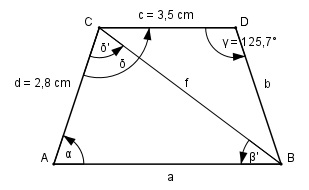

Aufgabe 167 Wie groß ist die Seite a des gleichschenkligen Trapezes?

b = d = 2,8 cm Im Dreieck CBD: Fall SWS: Cosinussatz: f2 = b2 + c2 - 2 * b * c * cos γ f2 = 2,82 + 3,52 - 2 * 2,8 * 3,5 * cos 125,7° f2 = 2,82 + 3,52 - 2 * 2,8 * 3,5 * (-0,5835) = f2 = 31,5 |√ f = 5,6 cm δ = γ α = 180° - δ = 180° - 125,7° = 54,3° (Stufenwinkel) Fall SSW: Sinussatz: f d ------- = -------- |*sin β’ sin α sin β’ f * sin β’ ------------- = d |*sin α sin α f * sin β’ = d * sin α |:f d * sin α sin β’ = ------------ = f 2,8 cm * sin 54,3° 2,8 cm * 0,8121 = -------------------- = ----------------- = 5,6 cm 5,6 cm = 0,4061 --> β’ = 24° δ’ = 180 – α – β’ = 180° - 54,3° - 24° = 101,7° Fall SWW: Sinussatz: a f ------- = ------- |*sin δ’ sin δ’ sin α f * sin δ’ a = ------------ = sin α 5,6 cm * sin 101,7° 5,6 cm * 0,9792 = --------------------- = ------------------- = sin 54,3° 0,8121 = 6,8 cm